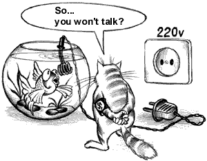
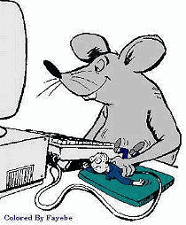
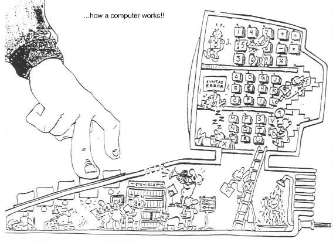

| LevSelector.com |
Miscaleneous links.
| Misccaleneous Resources | home - top of the page - |
• www.compuspec.net - excellent site owned by Roger Hall - gifted programmer-consultant
|
 |
| How to make bootable CD: | home - top of the page - |
| • www.ozemail.com.au/~rossstew/drs/bootcd.html - excellent FAQ • nikko.simplenet.com/goldentime/bootcd01.htm - • www.cdrcentral.com/ - mailing list site • www.fadden.com/cdrfaq/ - very good • www.fadden.com/cdrfaq/faq03.html#[3-15] - • www.cdpage.com/Compact_Disc_Variations/bootablecdarticle.htm - good article • www.ntfaq.com/ntfaq/recovery21.html - how to make bootable CD to repair NT (also www.winternals.com) - |
| Installing NT | home - top of the page - |
Installing NT on Large IDE Hard Drive (>8 MB):
• support.microsoft.com/support/kb/articles/Q197/6/67.ASP
-
• x46.deja.com/getdoc.xp?AN=515367489&CONTEXT=936821150.2044592184&hitnum=19
-
It is good idea to have 2 NT installations on different hard drives.
Also use GHOST to make images of your installation - and save it on
a different drive or CD.
|
 |
• java.sun.com/features/1999/08/futures.html
- future of Java
• www.brasscannon.com/Linux/ - Linux PPP Dial-on-demand and IP Masquerade Rotating Images:
MISC MISC
|
| Books | home - top of the page - |
Start putting together your own programming library. Check out my list
of favorite books.
Ray Kurzweil - The Age Of Spiritual Machines
Philip Greenspun - Philip and Alex's Guide to Web
Publishing
| Music | home - top of the page - |
If you are interested in how to play music from the HTML site - check
this site
• w3.one.net/~kklasmei
If you want to buy/rent videos:
• www.amazon.com -
• www.reel.com -
• us.imdb.com/ - big movie database
• www.kozmo.com - NY city videos
delivered to your home in just 1 hour

ioccc.org/years.html -
Winning entries of The International Obfuscated C Code Contest (starting
from 1984)
| Why people don't like Microsoft | home - top of the page - |
Here is why some people don't like Microsoft:
|
|
|
| Your Co-Worker is A Hacker | home - top of the page - |
Your Co-Worker Is A Hacker if:
| -Everyone who ticks him or her off gets a $26,000 phone bill. |
| -Has won the Publisher's Clearing House Sweepstakes three years running. |
| -When asked for their phone number, they give it in hex. |
| -Seems strangely calm whenever the office LAN goes down. |
| -Somehow gets HBO on their PC at work. |
| -Mumbled, "Oh, puh-leeeez!" 295 times during the movie "The Net." |
| -Massive 401k contribution made in half-cent increments. |
| -Their video dating profile lists "public-key encryption" among turn-ons. |
| -Instead of the "Welcome" voice on AOL, you overhear, "Good Morning, Mr./Mrs. President." |
| -You hear them murmur, "Let's see you use that VISA card now, Professor
"I-Don't-Give-A's-In-Computer-Science!" |
• http://www.evoice.com/home.html
- free voice mail with email notification
• http://www.savetz.com/fax/
- FREE FAX FAQ
• Misc:Perl5 Ref Guide | CGI.pm | Carp.pm | PerlFunc.pod | PerlMonks | LDP |Sybase 101 | Russify Everything | Counterpane | MPI | Designing and Building Parallel Programs |
• CNET | news.com
|ZDNet | CNN
| IStand | RedHerring
| Weather
| StratFor | NYTimes
| Moshow's | 777Film
| 800flowers |
• EvenBetter | AddAll
| BBBuys || pWatch
| pScan || Frictionless
| NexTag | DealTime
| MySimon || StPrices
| Jango | Bottom$
||
• CheapBytes|LSL | CDROM ||Tiger | Dell || Shopper | Shopping | NetBuyer |
• SlashDot | LPlanet | Scripting | Xak-Zone | Freshmeat | TheRegister | PSS || DaeNews | Deadly
• NetCraft | eConstructors
| Register.com | Tonic.to
|
| ACE | home - top of the page - |
• www.cs.wustl.edu/~schmidt/ACE.html
- The Adaptive Communication Environment - An Object-Oriented Network Programming
Toolkit in C++ (Open Source).
• ACE
Installation -
• ACE
Manual Page Index -
• ACE
tutorials or Advanced
ACE tutorials -
• ACE
Class categories -
• ACE
Software Development Guidelines -
• www.phoaks.com/phoaks2/index.html
- PHOAKS : People Helping One Another Know Stuff Page